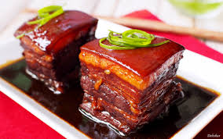

Dongpo Pork

Home
Dongpo Pork is a Hangzhou dish made by pan-frying and then red-cooking pork belly. The pork is typically cut into thick, approximately 5 cm (2 in) squares, with an even distribution of fat and lean meat, while retaining the skin. The texture is tender and juicy without being excessively greasy, accompanied by a fragrant aroma of wine. The dish is named in honor of Su Dongpo (Su Shi), a distinguished Song Dynasty poet and gastronome.
Ingredients
- 1 lb raw pork belly
- 3 tbsp vegetable oil
- 1/4 cup light soy sauce
- 1/4 cup dark soy sauce
- 1/2 cup Chinese rice cooking wine
- 3 and 1/2 ounces Chinese rock sugar
- 1 piece fresh ginger (peeled/grated)
- 8 spring onions (sliced)
Steps
- Slice pork belly into 2-inch wide strips. Bring a large pot of water to a boil, and stir in pork slices; reduce heat to a simmer, and cook the meat for 10 minutes. Remove from the water and blot dry with paper towels
- Heat vegetable oil over medium-high heat in a large wok. Brown pork strips well on all sides. Pork will splatter — use a splatter shield for this step.
- While pork is browning, mix together light soy sauce, dark soy sauce, rice wine, rock sugar, ginger, and spring onions in a large soup pot or stockpot. Bring the mixture to a boil, stirring to dissolve sugar. Reduce heat to a gentle simmer and lay the pork strips into the liquid. Cover, and simmer until the meat is very tender, 1 1/2 to 2 hours. Add water as needed to keep the liquid from going completely dry.